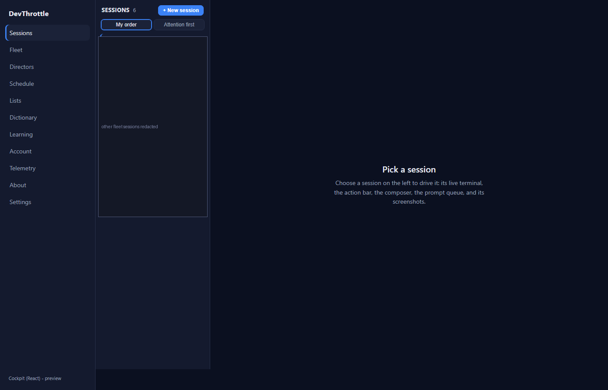
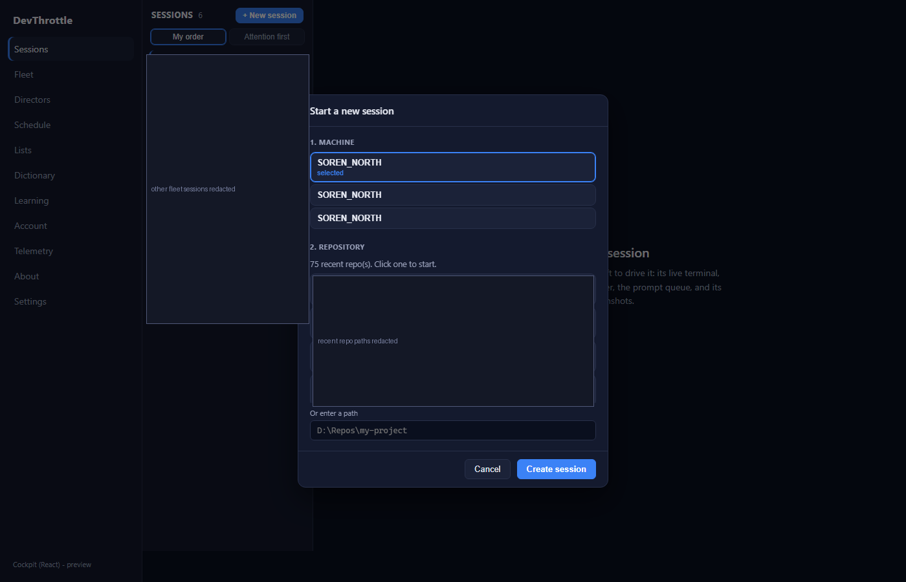
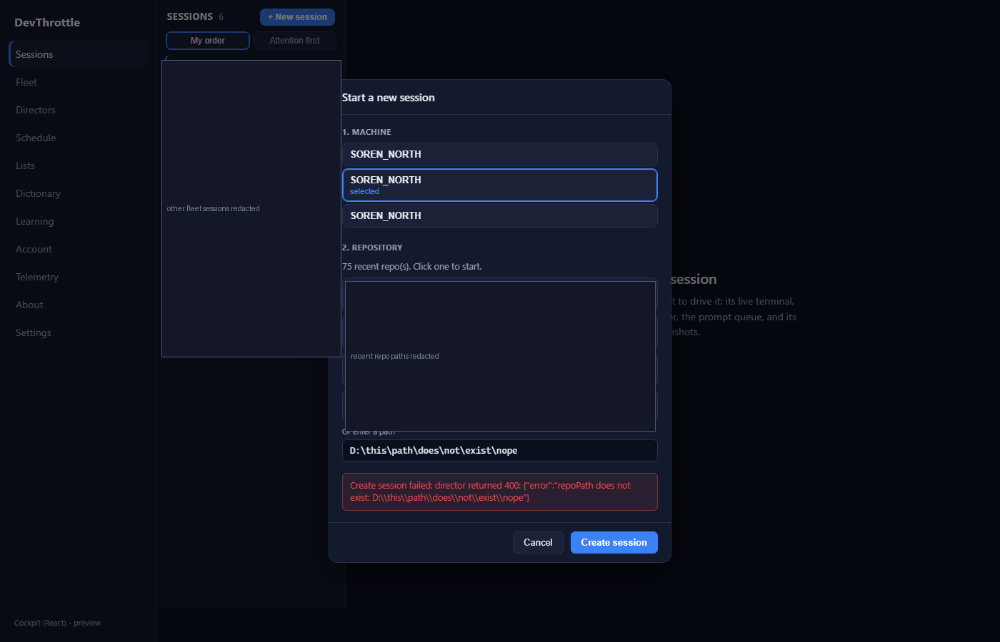
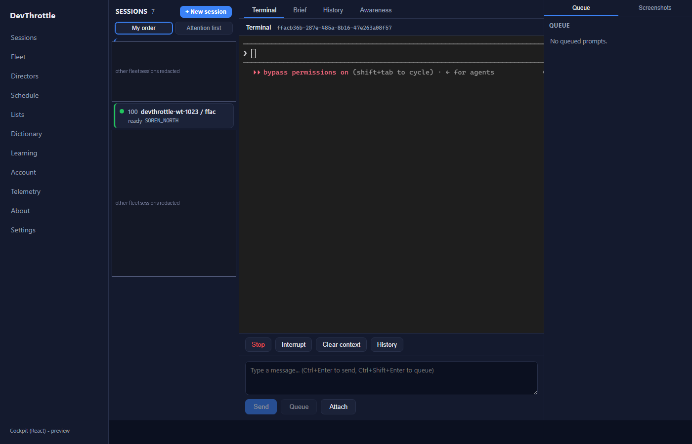
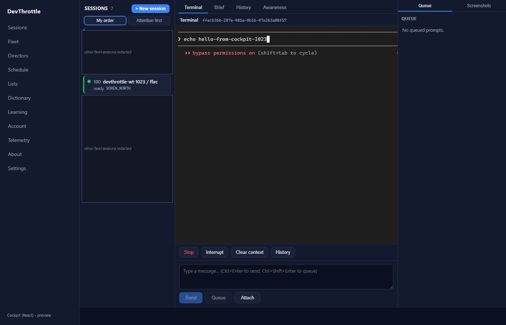

The React desktop Cockpit had no way to start a session - createSession existed in
packages/client-core but nothing in apps/cockpit called it. This change adds a
clearly visible "+ New session" control to the session roster head and a dedicated
machine/repository picker dialog (the desktop "selection via a dialog, not inline" convention). The
dialog reuses the same client-core contract the mobile shell uses - getDirectors,
getRepos, createSession - so both shells create sessions through the one
Gateway front door (POST /directors/{id}/sessions).
apps/cockpit/src/sessions/NewSessionDialog.tsx - new dedicated dialog: pick a machine
(default-selects the most-recently-seen), pick a recent repo or type a path, create. Errors surface
inline; a create-in-flight guard blocks double submits; a request-sequence guard drops stale repo
responses.apps/cockpit/src/sessions/SessionRoster.tsx - the "+ New session" button on the roster
head, wired to an onNewSession callback.apps/cockpit/src/sessions/SessionsView.tsx - owns the dialog open state; on success it
refreshes the roster immediately (no waiting for the next poll tick) and opens the new session.apps/cockpit/src/styles.css - the button + dialog styling, all on the shared navy
design tokens (no hard-coded colors outside the token block), matching the Schedule create dialog.| Criterion | Result | Evidence |
|---|---|---|
| A clearly visible "+ New session" control exists on the roster/rail. | PASS | Button on the roster head - screenshots 01, 02. |
Lets the user choose a machine + repo and creates a real session via the Gateway
(POST /directors/{id}/sessions), which appears in the roster and is drivable. |
PASS | Created session ffacb36b-287e-485a-8b16-47e263a08f57 on the isolated Director
6ccfae18; it appears as a roster row and its terminal renders and accepts typing -
screenshots 04, 05 and the Director session JSON below. |
| Errors (bad repo path, unreachable Director) show a clear inline message, not a raw error. | PASS | A non-existent path returns a clean inline message, not a thrown error - screenshot 03. |
| Full build gate clean (cockpit build, lint, Gateway RunCockpitBuild, cc-director.sln). | PASS | All four green - see "Build gate" below. |
127.0.0.1:7881,
directorId 6ccfae18-e8bf-4585-9e4f-9255aa1624d8) that registered to the real running
Gateway (127.0.0.1:7878). The Cockpit under test was served by the Vite dev server with
its built-in Gateway proxy (COCKPIT_PROXY_TARGET), so the new code drove the real fleet.
The new session was created on the isolated Director only - never on the user's live sessions. In the
roster screenshots the other live fleet sessions and the private repo paths are redacted; the machine
hostname is kept, matching the committed issue-972 roster proof convention.





echo hello-from-cockpit-1023 typed at the
live terminal prompt.{
"sessionId": "ffacb36b-287e-485a-8b16-47e263a08f57",
"directorId": "6ccfae18-e8bf-4585-9e4f-9255aa1624d8", // the isolated test Director, not the user's fleet
"agent": "ClaudeCode",
"repoPath": "D:\\ReposFred\\devthrottle-wt-1023",
"status": "Running",
"activityState": "WaitingForInput",
"name": "devthrottle-wt-1023 / ffac",
"claudeSessionId": "035df77b-acc7-415e-b73c-0b88ab501a63"
}
| Gate | Command | Result |
|---|---|---|
| Cockpit build | npm run build (apps/cockpit) | built, 0 errors |
| Lint | npm run lint (workspace) | clean, 0 problems |
| Gateway + Cockpit | dotnet build CcDirector.Gateway.csproj -p:RunCockpitBuild=true | Build succeeded, 0 Warning(s), 0 Error(s) |
| Full solution | dotnet build cc-director.sln | Build succeeded, 0 Warning(s), 0 Error(s) |
No architecture or security drift. This is a Cockpit-only client feature that calls existing,
already-documented Gateway endpoints (GET /directors, GET /directors/{id}/repos,
POST /directors/{id}/sessions) through the existing client-core contract. No new container,
no new endpoint, no change to the security posture. No docs/cencon/ update needed.
I believe this is finished. Every acceptance criterion is met with live proof, the full build gate is clean, and the change stays within the Cockpit surface conventions.